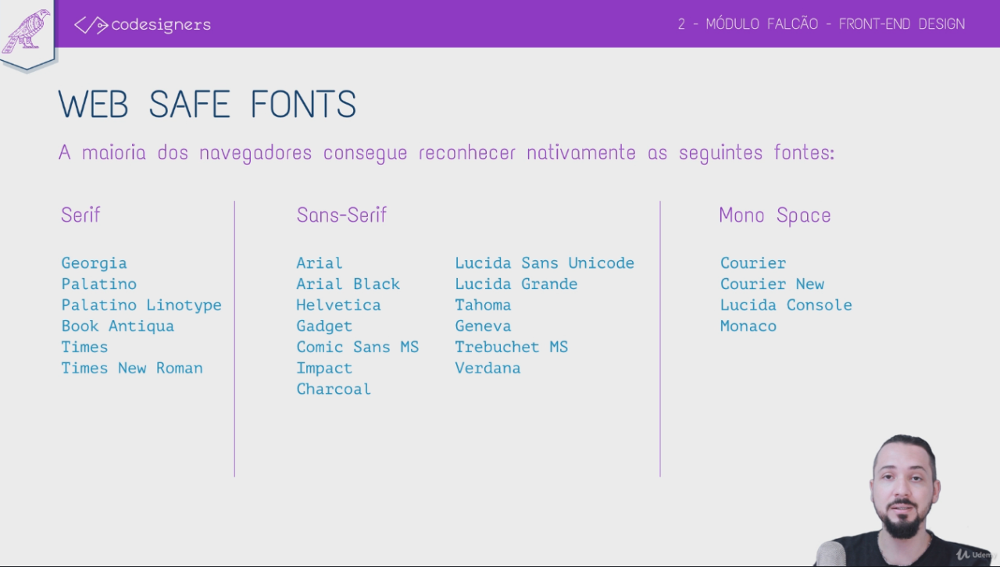
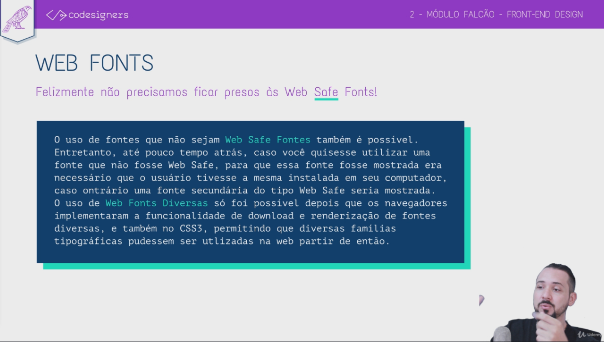

Web Safe Fonts

Web Fonts

Web Fonts
Os principais sites que mantém repositórios de Web Fonts são:
Google Fonts -
https://fonts.google.com/
Adobe Edge Fonts -
https://fonts.adobe.com/
Typekit-
https://typekit.com
Font Squirrel -
https://www.fontsquirrel.com/
Bônus: Fontpair -
https://www.fontpair.co/